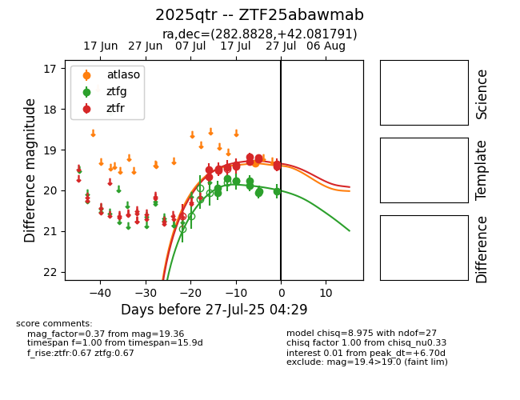

Target 2025qtr at 2025-07-27 04:29, see:
FINK: fink-portal.org/2025qtr
Lasair: lasair-ztf.lsst.ac.uk/objects/2025qtr
ALeRCE: alerce.online/object/2025qtr
TNS: wis-tns.org/object/2025qtr
YSE: ziggy.ucolick.org/yse/transient_detail/2025qtr
alt names
ZTF25abawmab (ztf,fink)
2025qtr (tns,yse)
coordinates:
equatorial (ra, dec) = (282.8828,+42.08179)
galactic (l, b) = (71.7256,+17.77789)
photometry
last atlaso=19.34, ztfg=20.02, ztfr=19.36
1 atlaso, 10 ztfg, 13 ztfr detections
